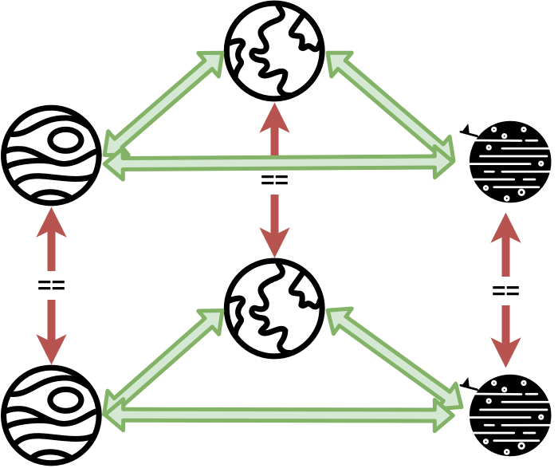

module HoTT.identity where
open import Agda.Primitive using (Level; _⊔_; lsuc; lzero)
open import Types.product using (Σ; _,_; fst; snd)Identity types in type theory are the type of all equality types. An equality type between x, y ∈ A can be considered as a path from x to y. All of such paths share a relation amongst each other.
Identity types are also known as Paths.
We define equality itself as a path:
This forms the base of HoTT wherein we rebuild pretty much everything on the above structure.
An inductive type is a type with a recursive constructor that can be used to successvely obtain elements of that type. However, though this definition “generally” works, there are more technical ones available here for example.
The family of identity types is freely generated from elements of the form identity: x == x. Such a family’s constructor is a dependent type C : {x y : A} → x == y → Set ℓ₂, which depends on two objects x and y of type A and an equality type or path between the two objects, can also be written as \(Π(x, y, x ==_A y)\). Let c be a function that applies an object x to the constructor C and its identity equality type to obtain the path from x → x.
path-induction : ∀ {ℓ₁ ℓ₂} {A : Set ℓ₁}
(C : {x y : A} → x == y → Set ℓ₂)
→ (c : (x : A) → C {x} {x} identity)
→ ({x y : A} (p : x == y) → C p)
path-induction C c {x} identity = c x
path-induction⁻¹ : ∀ {ℓ₁ ℓ₂} {A : Set ℓ₁}
(C : {x y : A} → y == x → Set ℓ₂)
→ (c : (x : A) → C {x} {x} identity)
→ ({x y : A} (p : y == x) → C p)
path-induction⁻¹ C c {x} identity = c xpath-induction-v2 : ∀ {ℓ₁ ℓ₂} {A : Set ℓ₁}
(C : {x y : A} → Path x y → Set ℓ₂)
→ (c : (x : A) → C {x} {x} identity)
→ ({x y : A} (p : Path x y) → C p)
path-induction-v2 C c {x} identity = c x
path-induction-v2⁻¹ : ∀ {ℓ₁ ℓ₂} {A : Set ℓ₁}
(C : {x y : A} → Path y x → Set ℓ₂)
→ (c : (x : A) → C {x} {x} identity)
→ ({x y : A} (p : Path y x) → C p)
path-induction-v2⁻¹ C c {x} identity = c x
This induction property could also be interpreted as, for an inductively defined identity type family, the entire family can be completely specified with just the elements identityₓ. Thus, since C(x, x) holds on all x ∈ A, if we are given x == y, then C(x, y) must hold. Getting the understanding of the induction principle can be tricky as the ideas around it are still in argument / development. Here are a few resources 1 2 3.
A dependent path describes the notion of equality preserving functions. It states that given a dependent type \(Π(a, b)\) and the equality type between them, there exists a path \(F(a) → F(b)\).
DependentPath : ∀ {i j} {A : Set i} {x y : A}
→ (F : A → Set j)
→ (p : x == y)
→ (a : F x)
→ (b : F y)
→ Set j
DependentPath F identity a b = (a == b)Paths can be composed or concatenated (both from left and right):
The above concatenations imply the same thing:
path-concat-equals-left : ∀ {ℓ} {A : Set ℓ} {x y z : A}
→ (a : x == y)
→ (b : y == z)
→ Identity (a ∘ b) (a ∘ₗ b)
path-concat-equals-left identity identity = identity
path-concat-equals-right : ∀ {ℓ} {A : Set ℓ} {x y z : A}
→ (a : x == y)
→ (b : y == z)
→ Identity (a ∘ₗ b) (a ∘ b)
path-concat-equals-right identity identity = identityPath concatenation is associative:
path-concat-assoc : ∀ {ℓ} {A : Set ℓ} {w x y z : A}
→ (a : w == x)
→ (b : x == y)
→ (c : y == z)
→ Identity ((a ∘ b) ∘ c) (a ∘ (b ∘ c))
path-concat-assoc identity identity identity = identityand similar for left and mixed ∘ and ∘ₗ cases.
As paths are identities, they also have inverses. For every type A and every x, y ∈ A, there exists a function:
\(f : (x == y) → (y == x)\)